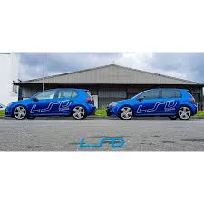

Welcome to LSD Tuning Durban
Your one-stop solution for vehicle upgrades, diagnostics, and tuning. At LSD Tuning Durban, we pride ourselves on delivering cutting-edge automotive services, ensuring that every vehicle we touch reaches its full potential.
LSD Tuning was founded in 2013 by the late visionary, Vernon Govender, who turned his passion for cars into a business that thrives on performance excellence. Though Vernon has passed on, his legacy continues to fuel our dedication to creating exceptional automotive experiences. His philosophy of "Create, Inspire, Achieve" remains the core of what we do.
We offer a wide range of services, including performance upgrades, engine tuning, and comprehensive vehicle diagnostics. Our expert team ensures that your vehicle runs at its best—whether it's for the track or the street.
Come visit us at 254 Newcentre Drive, Newlands West, Durban and let us help you transform your car into the machine of your dreams!
Explore Our Services